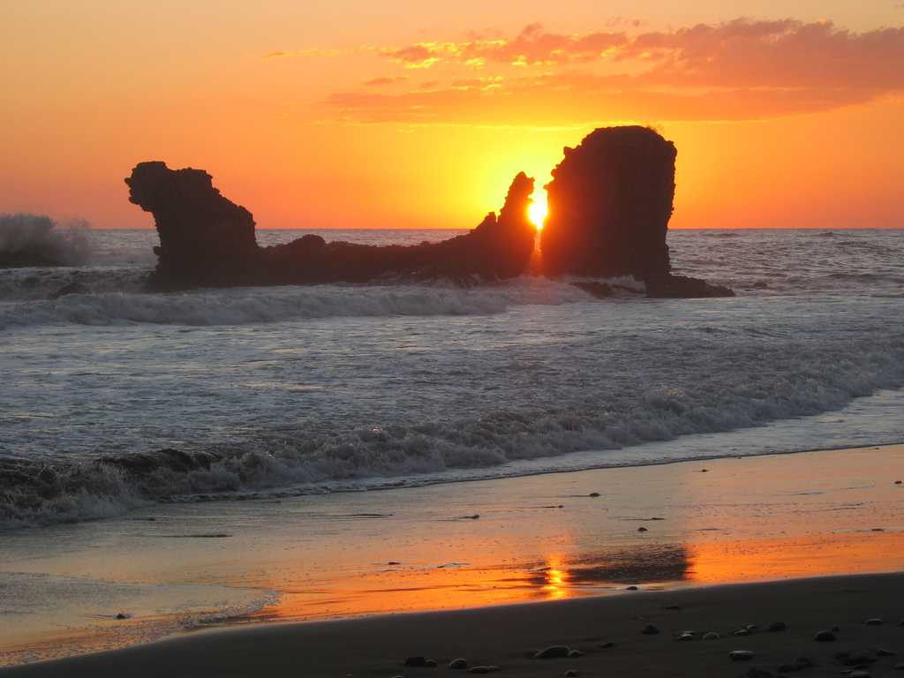
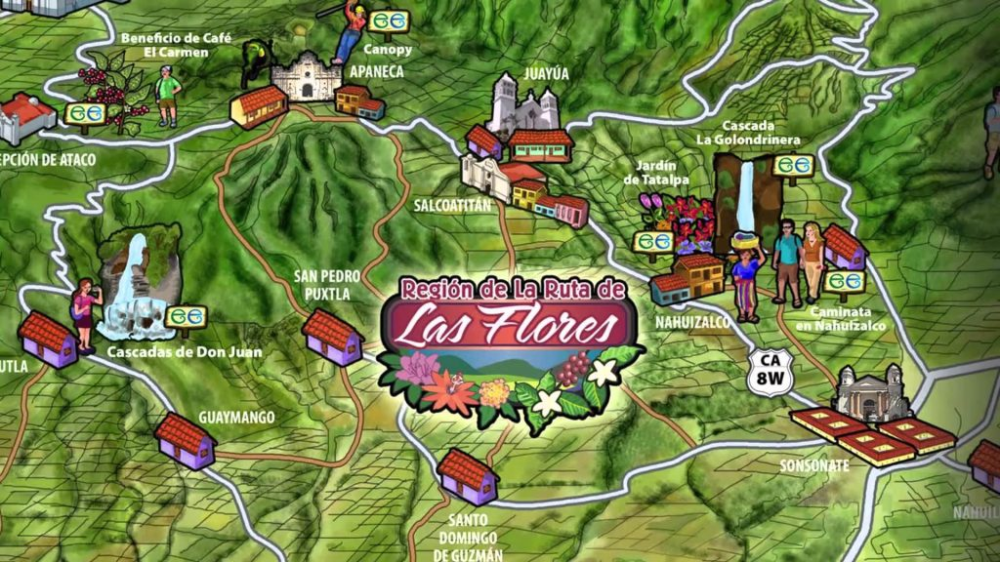
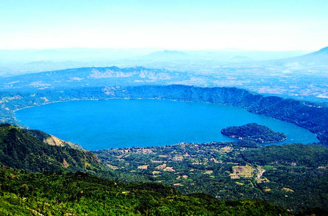

Lugares Destacados
De click sobre la targeta para ver su descripcion
Playa El Tunco
De click sobre la targeta para ver su descripcion

Volcán de Izalco
De click sobre la targeta para ver su descripcion
Ruta de las Flores
De click sobre la targeta para ver su descripcion
Lago de Coatepeque
De click sobre la targeta para ver su descripcion